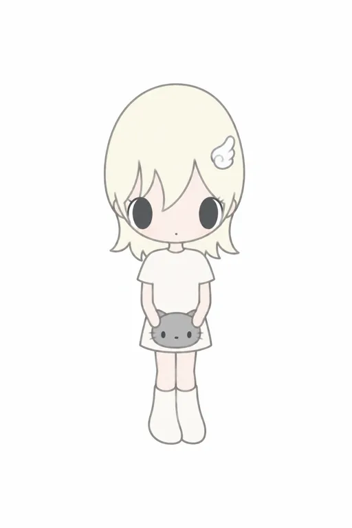

高辨识五官与低信息情绪留白
V01、V02、V05的大黑眼、极小嘴与宽额发块；不同情境保留类似脸
被喜欢的画面，如何变成想拥有的东西？
淡彩、大黑眼、少量表情，给情绪留下空间。从头像走到展览和周边后，温柔的表达还需要具体的体验来承接。
标题与导语为研究问题和推断；未证实IP级营收、销量或成功排名。
查看 5 轮平面实测 ↗
V01、V02、V05的大黑眼、极小嘴与宽额发块；不同情境保留类似脸
展览主张自我接纳；部分用户求壁纸和喜欢同行拍照
头像使用线索、付费展、联名与周边并存；有正向体验也有不喜欢的反馈
不能由几条负评宣称商业衰退；具体空间与商品质量需独立体验核验 [S05] [S06] [S10] [S12] [S14]
这是可见载体与行为的梳理，不是已测量的转化漏斗；各环节转化率未知。
| 层级 | 可以确认 | 仍不能确认 |
|---|---|---|
| 名称 | 研究对象为“野有上秋／上秋子”；SIPS使用“野有上秋 SQles” [S02] [S04] | 用户输入“上野秋子”作为检索别名保留，不作为正式名称 |
| 创作者 | 公开展示名SQles／野有上秋 | 法定姓名、年龄、国籍；不能把“00后国内插画师”直接当履历 |
| 合作关系 | Gallery Nowhy展示／代理其作品 [S01] [S03] | 完整运营主体、版权归属、独家地域与合同期限 |
| 起源 | 转载Q&A自述首幅创作日期为2025-05-11 [S04] | 最早原帖、首次公开、正式出版、首商品不能混成同一天 |
未取得画集版权页、ISBN或出版社书目，不把网络插画自动写成正式出版起盘。
🌿每天认识一个IP I 野有上秋 ↗ · 爱分享的朵拉。正文、部分评论与封面已读；7张配图仅看首图，日期“07-24”未显示年份。[S12]
| 原笔记线索 | 本次结论 |
|---|---|
| 00后国内插画师 | 缺可靠履历，年龄和国籍留空。 |
| 2025夏诞生／名字取自诗经 | 转载主体声明提供了更具体的创作日期及分词解释；按自述呈现，原帖尚未核。 [S04] |
| Gallery Nowhy签约 | 展示／代理关系有展会与报道支持，版权合同未取得。 [S01] [S03] |
| 人头马、星巴克合作 | 找到的SIPS原文将它们列为ART2GETHER艺伙的案例；不能归入本IP。WHOOSIS、F426另有品牌自身证据。 [S01] [S05] [S06] |
| 头顶白翅膀、星星泪 | 高频视觉线索，不是每张都有；封面翼饰出现在肩附近且无图源，不用它锁定母版。 |
6个实看样本覆盖插画、展场、装置和挂件。原图外链显示，点击可打开；二手图源明确标注，未复制为本站原创素材。


| 项目 | 跨样本观察 | 边界 |
|---|---|---|
| 轮廓／比例 | 高而大的头部，细窄小身；目标约2头高（目测） | 现场有透视，不能当官方尺寸规范；不补侧背面 |
| 脸与眼睛 | 脸缩在头下方，大黑竖椭圆眼与极小嘴；眼距、眼缘和刘海开口共同识别 | 眼睛过小或头横向变宽，都使纯文字版失去目标特征 |
| 头发／色彩 | 浅黄为高频；V01有长短发并列，V05有二手署名黑发样本 | 长发、单一黄色均不升格为绝对固定值 |
| 羽翼／泪 | 白羽饰常出现；泪可为星状、液态，某些图无泪 | 不能给所有版本强加星泪，也不能把背翼与发夹混为一物 |
| 服装／道具 | 白衣、动物、包、咖啡与情境变化；本轮只锁定灰猫包短袖款 | 各图组合属于具体作品，不凭混合样本创造所谓官方基础版 |
| 表达 | 克制脸＋动作／关系／场景共同承接情绪 | “治愈”是内容定位与个体感受，不是经验证的疗效 |
浅奶黄
#EEE9CB
头发
浅桃
#EBD9CE
脸和四肢
奶白
#F3EFE4
衣裙／靴／羽翼
浅灰
#A5A6A6
猫脸包
炭灰
#414647
眼睛
线灰
#8E9290
外轮廓
未做像素采样、主体分割或实物打样；色值不代表官方标准。画作软边、装置反光和毛绒绒面是三种呈现，不把照片观感写成材料规格。
| 载体／产品 | 可核记录 | 规格与价格缺口 |
|---|---|---|
| SIPS新款艺术公仔 | 2026年5月由Gallery Nowhy在展会展示。 [S01] | SKU名、高度、材料、版数及售价未知；不能称首款或爆款 |
| 《你已经很好了》展览 | 多个城市展讯；杭州成人日常票59元为2026-08-05媒体记录。 [S04] [S08] [S09] | 未获官方票务复核，不作实时价格；服务不是玩具SKU |
| WHOOSIS联名帽T | 品牌旗舰店有联名分类；台湾零售商帽T页面标价NT$1,800，S–XXL。 [S05] [S11] | 第三方报价，非大陆首发价；面料成分、厘米尺寸及授权店身份未核 |
| F426联名赠品 | 2026-10-03官微：线上满1件赠眼罩／编织袋，满2件赠挂件，数量有限。 [S06] | 赠品非独立零售价；实际规则和库存以门店为准，尺寸材料未全披露 |
| 上海展服饰／饰品／毛绒 | 开幕宣传称近60款新品与城市限定；V04可见挂件陈列。 [S07] | 新品种数是宣传口径，不是销量；未获得逐款价目与物料表 |
IP营收、授权收入、销量、复购、利润和最畅销品类均未知。展会总人流、商场整体业绩与其他IP战报，不能填进它的数字栏。
本档 numbers=[]，hit_category=null；未知不等于零。
广州探展帖喜欢朋友同行与拍照；指定笔记中有人求壁纸。可支持情绪表达、社交展示这些场景，无法推算真实付费人数。
一名观展用户不喜欢画风和眼距。说明强风格也会筛选受众，不能把每个审美分歧都解释为不了解IP。
仅一则文本反馈；未核票据，不代表整体满意度。[S14]
媒体讨论体验与价格落差，评论区也出现质疑。记录这些信号，同时保留归因边界；没有销售时序，无法宣称已经商业失败。
对运营的可检验问题：免费头像所建立的好感，是否被展览时长、动线、光线、商品触感和价格兑现？这些需现场与用户研究，本轮只提出假设。
以下为依据可见作品的研究重建，不是作者原始提示词，也不能证明原作由AI制作。所有执行文本均不带现有IP、品牌或艺术家名称。
点击查看实际输入、输出及偏差。选择历史版本不会改变当前候选记录。
仅对小分辨率目标的可见形作近似判断，不认定精确复刻；最终仍有渐变、线条清晰度和轻微比例差异。英文与黑白版本未测，没有放入正式提示词区。研究质量标记不替代你的审美确认。
借“允许某种情绪”的表达机制，先找到具体生活冲突，避免只有治愈标签。
借大色块与低位五官的层级关系，重新设计独立轮廓，不套羽翼、星泪和黑眼组合。
把从屏幕到商品、展览的变化分开验证：小尺寸识别、触感、携带及空间体验各有证据要求。本轮不进入3D或原创生成。
SIPS多语言与转载属于同一主办方来源；上海展开幕同文报道按一个宣传家族处理。个人帖、官方活动、零售标价与研究推断分开使用。图片外链可能受来源站限制。